Units
Every unit in the game, by tier, role and alliance.
Warspire has 65 units you can buy, in 5 tiers. You buy them from the shop, which draws from a pool of copies shared by all players. 3 copies of a unit combine into the next star level, up to 3 stars. Every unit carries alliances, and fielding enough units of one alliance turns on its bonus.
A further 23 units are never sold: they are summoned or placed during combat. They are listed further down this page. To compare numbers side by side use the Unit stat table, and to see which units share alliances use the Alliance matrix.
Tiers
| Tier | Units | Gold cost | Copies of each unit in the pool |
|---|---|---|---|
| Tier 1 Common | 14 | 1 | 30 |
| Tier 2 Uncommon | 14 | 2 | 20 |
| Tier 3 Rare | 14 | 3 | 18 |
| Tier 4 Epic | 13 | 4 | 12 |
| Tier 5 Legendary | 10 | 5 | 10 |
Shop units
Pick a tier or a role, or type part of a name or an alliance.
 Ashen PilgrimTier 1 tank unit
Ashen PilgrimTier 1 tank unitAshen, Bulwark
 Bog HexerTier 1 support unit
Bog HexerTier 1 support unitMirefolk, Soulbinder, Mender
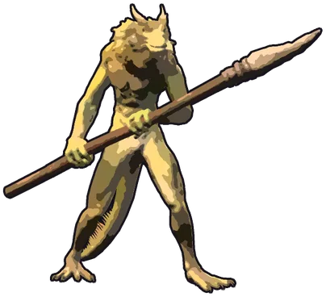
Drowned PikemanTier 1 tank unitDrowned, Warden, Watcher
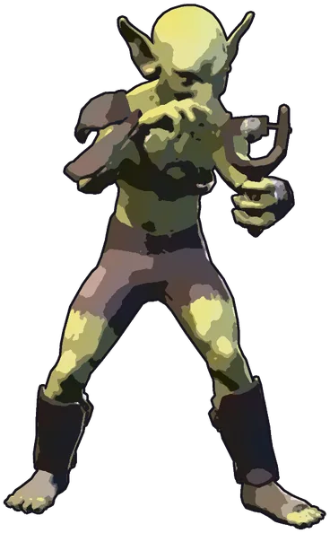
Gargoyle GunnerTier 1 ranged unitStoneborn, Stalker, Ironsight
 Grave ArcherTier 1 ranged unit
Grave ArcherTier 1 ranged unitWight, Stalker
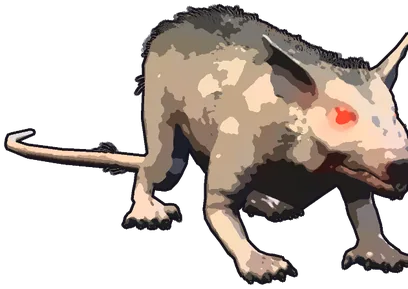
Gutter ScavengerTier 1 bruiser unitScrapkin, Artificer
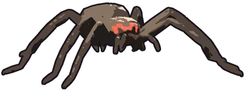
Hive SkulkerTier 1 assassin unitSwarmkin, Cutthroat
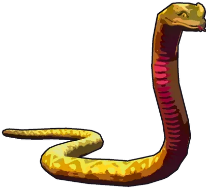
Mire SkirmisherTier 1 ranged unitMirefolk, Bulwark, Venomist
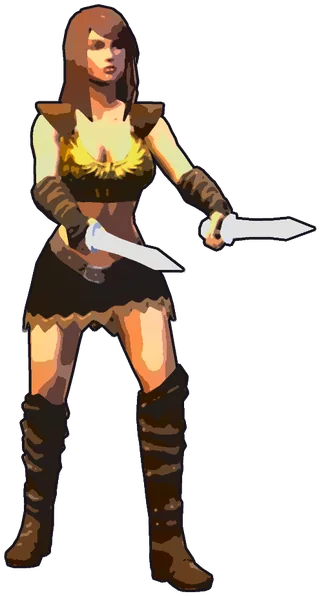
Oath CutterTier 1 assassin unitOathbound, CutthroatPit ImpTier 1 caster unit
Abyssal, Wight, Swarmkin
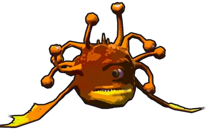
Rift MoteTier 1 caster unitRiftborn, Arcanist, Triad
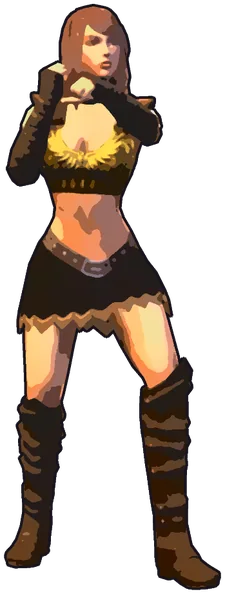
Spire AcolyteTier 1 caster unitSpireborn, Arcanist, Triad
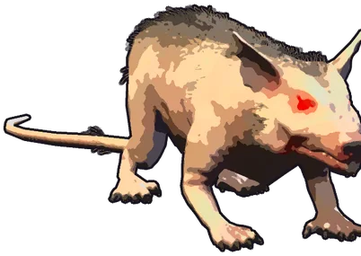
Thornback BoarTier 1 bruiser unitFeral, Warden, GrovekeeperThornwood SeerTier 1 support unit
Thornkin, Mender, Conjurer
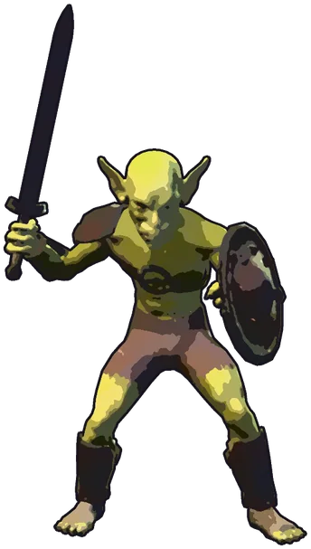
Banner SquireTier 2 bruiser unitSpireborn, Duelist, Watcher
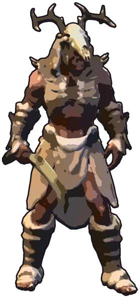
ChainwardenTier 2 tank unitWight, Warden, Watcher
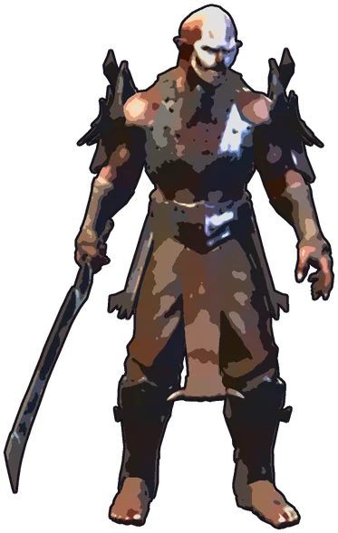
Cog SapperTier 2 tank unitScrapkin, Artificer
 Drowned WailerTier 2 caster unit
Drowned WailerTier 2 caster unitDrowned, Cutthroat, Venomist
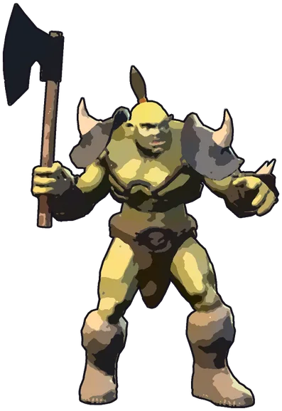
Gate DuelistTier 2 bruiser unitStoneborn, Duelist, WardenHellblade ReaverTier 2 bruiser unit
Abyssal, Bulwark, Duelist
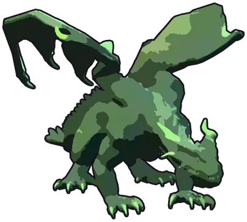
Jade DrakelingTier 2 caster unitWyrmblood, Arcanist
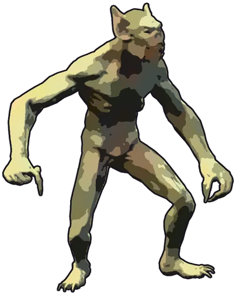
Marsh HagTier 2 caster unitMirefolk, Soulbinder, Grovekeeper
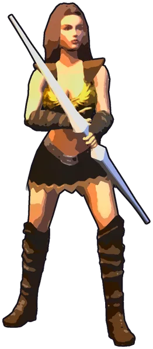
Night SentinelTier 2 ranged unitSpireborn, Stalker, Shade
 Oathkeeper ThaneTier 2 support unit
Oathkeeper ThaneTier 2 support unitOathbound, Arcanist, Ravager
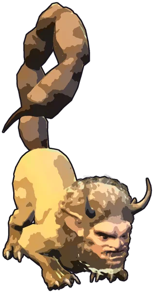
QuillbackTier 2 tank unitStoneborn, Feral, Grovekeeper
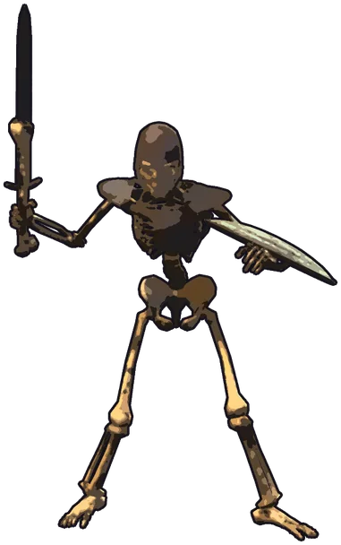
Riftlance DuelistTier 2 assassin unitRiftborn, Duelist, Shade
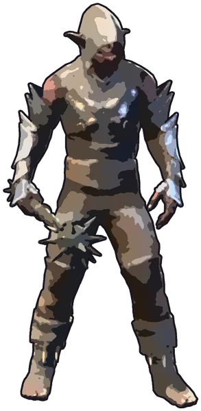
Saw RiggerTier 2 bruiser unitScrapkin, Artificer
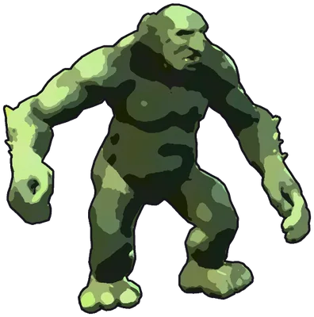
Thorn CallerTier 2 caster unitThornkin, Arcanist, Conjurer
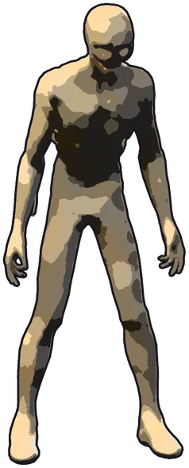
Ashen AbbessTier 3 tank unitAshen, Bulwark
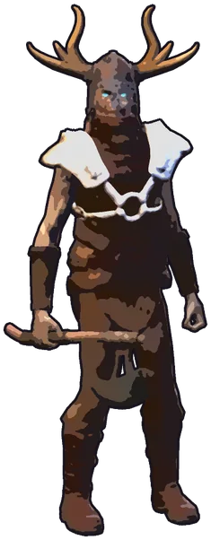
AshwalkerTier 3 bruiser unitAshen, Stalker, Wyrmblood
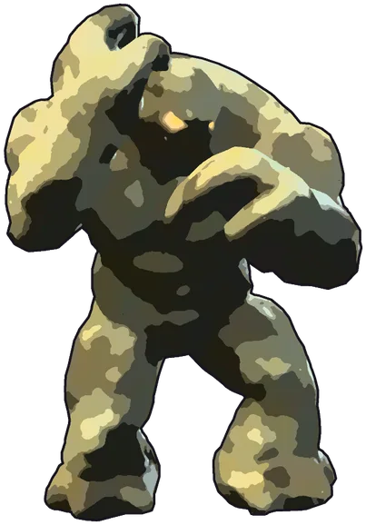
Briar ShaperTier 3 support unitGrovekeeper, Watcher
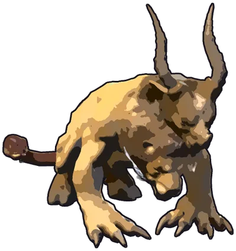
Cinder HatchmotherTier 3 bruiser unitAshen, Soulbinder, Venomist
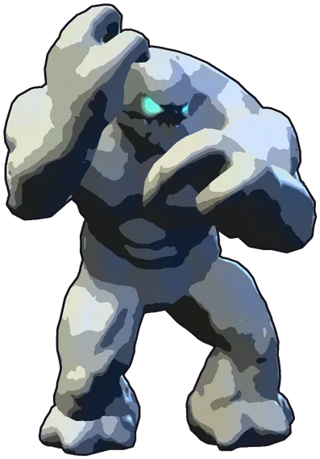
Clockwork SavantTier 3 caster unitScrapkin, Artificer, Arcanist
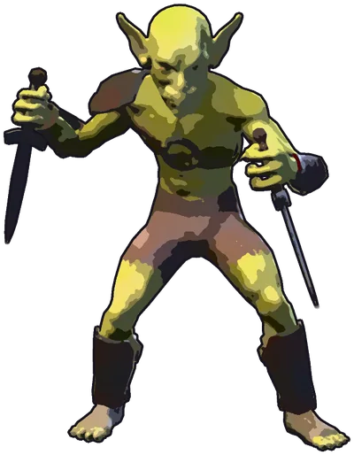
Ember DuelistTier 3 assassin unitAshen, Duelist, Cutthroat
 Fen MysticTier 3 caster unit
Fen MysticTier 3 caster unitMirefolk, Venomist, Conjurer
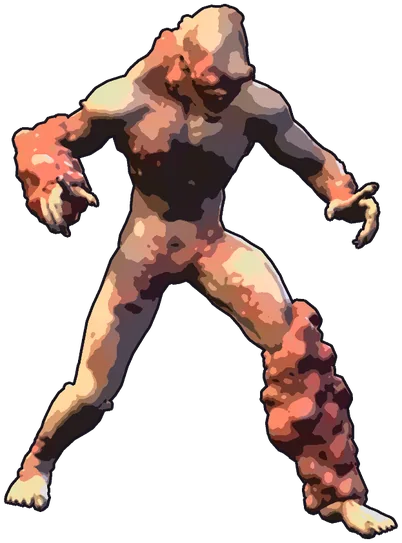
Gnawing WightTier 3 assassin unitWight, Ravager, Swarmkin
 Hollow SingerTier 3 caster unit
Hollow SingerTier 3 caster unitSundered, Riftborn, Arcanist
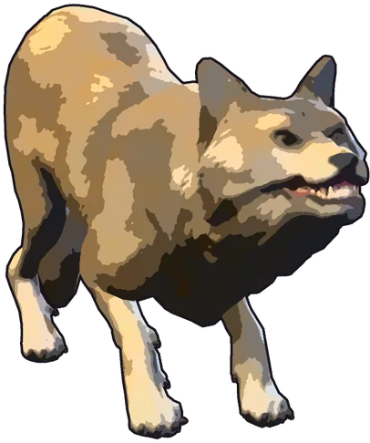
Moonless AlphaTier 3 bruiser unitSpireborn, Feral, ThornkinPack WardenTier 3 bruiser unit
Feral, Stalker, Thornkin
 Soul ReaperTier 3 ranged unit
Soul ReaperTier 3 ranged unitAbyssal, Soulbinder, Triad
 Spire MarksmanTier 3 ranged unit
Spire MarksmanTier 3 ranged unitScrapkin, Stalker, Ironsight
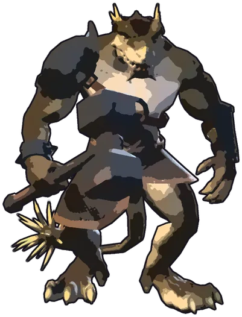
Tidal StalkerTier 3 assassin unitDrowned, Cutthroat, Swarmkin
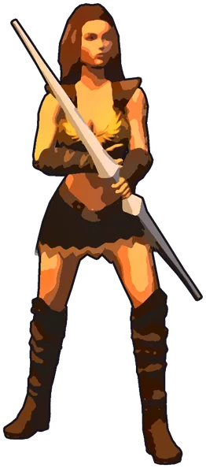
Bearclaw WilderTier 4 ranged unitFeral, Thornkin, Conjurer
 Blastcap SapperTier 4 caster unit
Blastcap SapperTier 4 caster unitScrapkin, Artificer
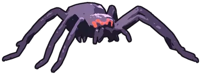
Brood QueenTier 4 caster unitSwarmkin, Conjurer
 Drowned BehemothTier 4 tank unit
Drowned BehemothTier 4 tank unitDrowned, Warden, WatcherDuskguardTier 4 bruiser unit
Shade, Bulwark, Duelist
 Grey ConfessorTier 4 support unit
Grey ConfessorTier 4 support unitSpireborn, Bulwark, Mender
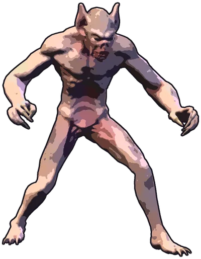
Hollow StriderTier 4 assassin unitSundered, Shade, Riftborn
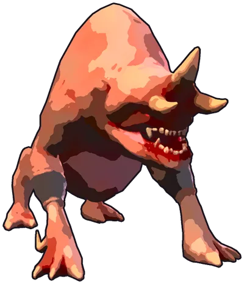
Pit MarshalTier 4 tank unitAbyssal, Ravager, WyrmbloodPlague CantorTier 4 caster unit
Wight, Soulbinder, Mender
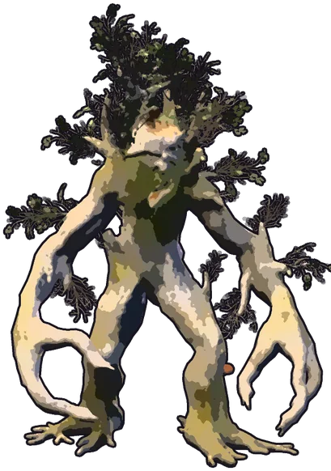
RootwardenTier 4 tank unitThornkin, Mender, Grovekeeper
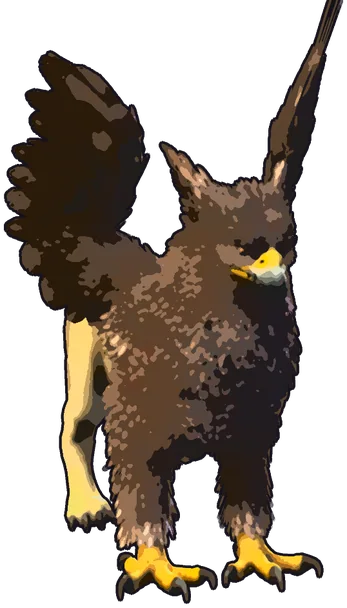
Skyfall ArcherTier 4 ranged unitSpireborn, Stalker, Ironsight
 Storm AugurTier 4 caster unit
Storm AugurTier 4 caster unitStoneborn, Soulbinder, Triad
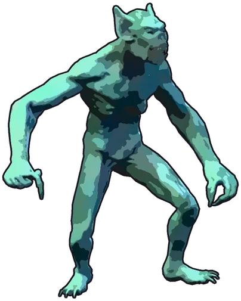
Veiled SeerTier 4 ranged unitSundered, Cutthroat, Riftborn
 Abyssal ArchonTier 5 caster unit
Abyssal ArchonTier 5 caster unitAbyssal, Arcanist
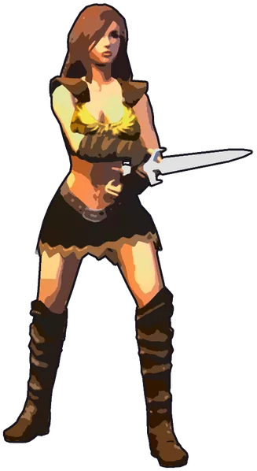
Blood MatriarchTier 5 bruiser unitOathbound, Feral, Duelist
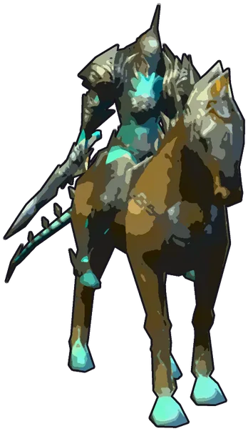
Cinder WyrmriderTier 5 tank unitSpireborn, Ashen, Bulwark
 Deep BasiliskTier 5 ranged unit
Deep BasiliskTier 5 ranged unitDrowned, StalkerDuskmotherTier 5 assassin unit
Shade, CutthroatHourbladeTier 5 assassin unit
Sundered, Cutthroat
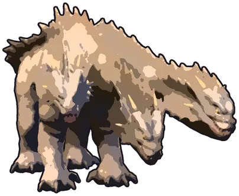
Mire KingTier 5 ranged unitMirefolk, Warden
 Soul TyrantTier 5 caster unit
Soul TyrantTier 5 caster unitWight, Soulbinder
 Spire ColossusTier 5 tank unit
Spire ColossusTier 5 tank unitStoneborn, Ravager, Warden
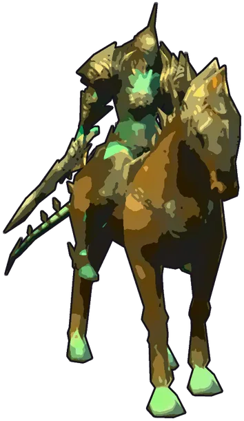
Spire ExemplarTier 5 bruiser unitParagon, Spireborn, Duelist
Summons and placeables
These units cannot be bought, sold or upgraded by combining. Abilities, alliances, items and commanders create them during combat. Each page says where the unit comes from. See Summons and placeables.
Summons
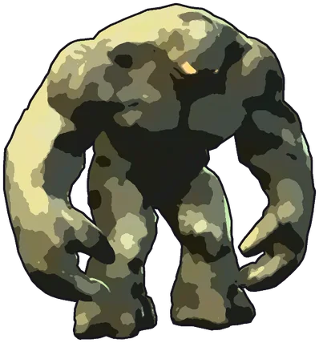
Bramble GolemFrom Thorn Caller's ability Raise Bramble Golem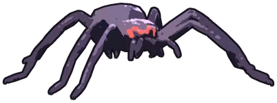
Brood HatchlingFrom Brood Queen's ability Brood Spawn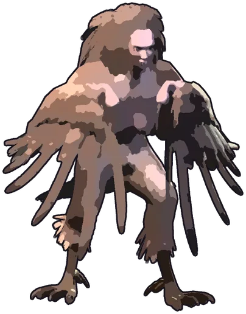
Carrion WingFrom the Thornkin allianceCinder MiteFrom Cinder Hatchmother's ability Spawn Mites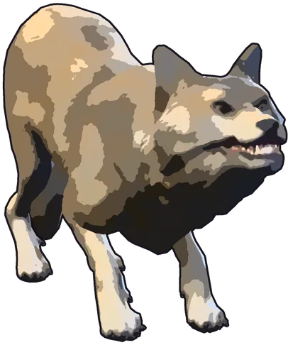
Dire WolfFrom Moonless Alpha's ability Call of the Pack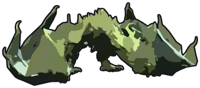
Elder ThornwyrmFrom the Thornkin alliance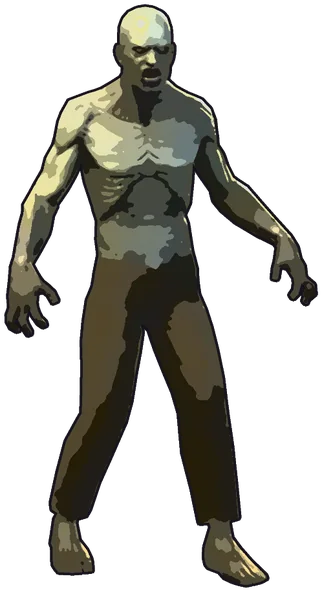
Grave ShamblerFrom the placeable Restless GravestoneGreater Rift EchoFrom the Riftborn alliance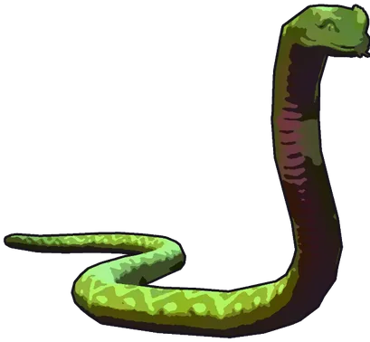
Mire WardFrom Fen Mystic's ability Mire Wards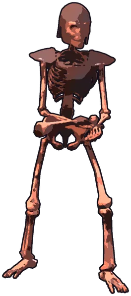
Pact ArcherFrom Vey the Pactbinder's ability Pact Retinue and Vey the Pactbinder's talent Second Retainer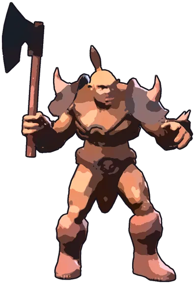
Pact BruiserFrom Vey the Pactbinder's ability Pact Retinue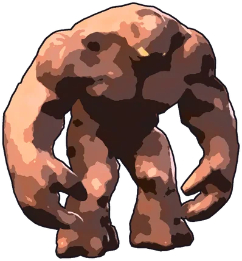
Pit GolemFrom Vey the Pactbinder's ability Pit Golem and Vey the Pactbinder's ability Pit ColossusRift EchoFrom the Riftborn allianceSkitterlingFrom the Swarmkin allianceSpire BearFrom Bearclaw Wilder's ability Call the Great BearStormhide BeastFrom the item Stormcaller HornThorn HoundFrom the Thornkin allianceThorn SaplingFrom Thornwood Seer's ability Call SaplingPlaceables
Objects planted on the board during combat. They never move or attack.